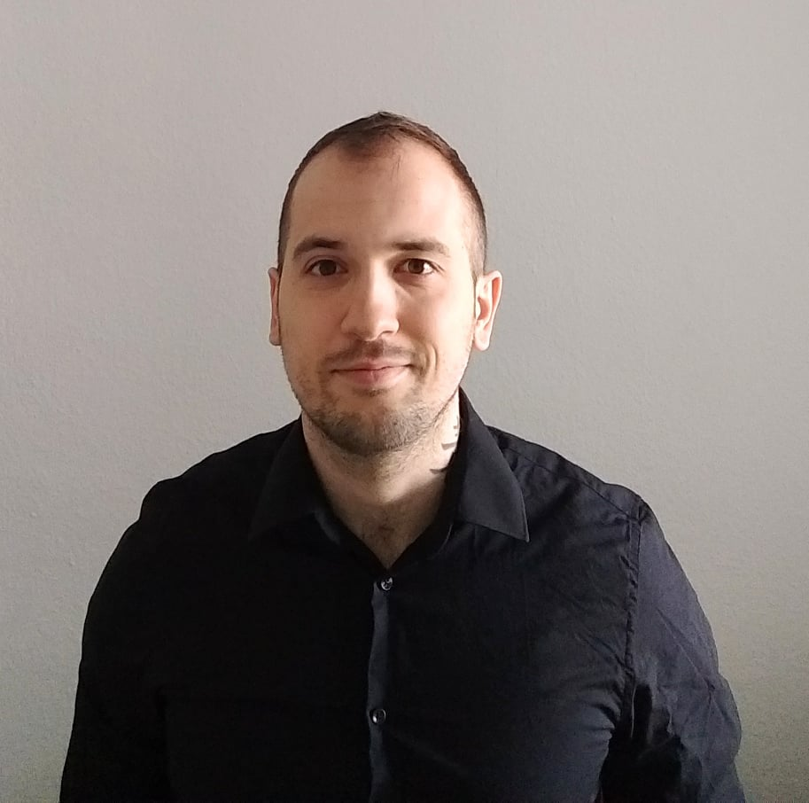

Resume
Plamen Mitev
Web Developer
Personal Profile
I am a web developer with over 4 years of experience, committed to the constant development of new skills and dedicated to solve every encountered problem. I can build responsive and interactive web applications from scratch, using variraty of technologies.
Skills & Interests
I am an expert in the following: HTML, CSS, JavaScript, React, Ruby, Ruby on Rails, SQL, Node.js, Git,
Contact Information
- Mobile:
- +49 179 5382366
- Email:
- pmitev.dev@gmail.com
- Portfolio:
- pmitev.com
- LinkedIn:
- @plamen-mitev
- Address:
- 12487 Berlin Germany
Career background
-
Front-end developer
Spark Networks Oct 2021 to Present
- Technologies used:
- HTML ,CSS / SASS ,Typescript , React, Svelte, PHP, Wordpress,Liquid, git
- Designs and develops project proposals
- Help reducing technical debt
- Tutor and helping junior developers
- Fixing bugs for existing websites using different technologies, and implements enchantments that improved web performance
-
Front-end developer
Alocai Jun 2021 to Sep 2021
- Technologies used:
- HTML ,CSS / SASS , Bootstrap , Typescript , React , Python, git
- Worked within an agile team in 2 weeks sprints.
- Collaborated with product team members, designers, and developers to implement new features for internal platform.
- Convert design wireframes into reusable react components.
-
Front-end developer
Altagram Nov 2020 to Jun 2021
- Technologies used:
- HTML ,CSS / SASS , Bootstrap , Typescript , React , Python, git
- Worked within an agile team in 2 weeks sprints.
- Participate in daily stand-ups.
- Helped prioritize and scope feature requests to ensure that the biggest impact features were worked on first.
- Collaborated with product team members, designers, and developers to implement new features for internal platform.
- Work closely with UX/UI designers and building and distribute as a package a design system for internal use.
- Resolve various bugs and issues.
- Convert design wireframes into reusable react components.
Education history
-
DCI Career Institute
Full-Stack Web Developer 2019-2020
Berlin Germany
- Gained in-dept javascript understanding.
- Design and develop various web applications using technologies that include HTML, CSS, JavaScript, React, Node.js, Express.js, MongoDB.
- Collaborated with other developers on group projects and established a solid agile workflow and methodologies.
- Tutoring and helping fellow students.
-
Career foundry
Full-Stack Web Developer 2018-2019
Berlin Germany
- Develope a fluency in Ruby, HTML, CSS and JavaScript.
- Build multiple projects from scratch using jQuery, AJAX,Bootstrap, MVC design patterns and configure Heroku.
- Implement payment integration, user authentication and authorization in Rails application.